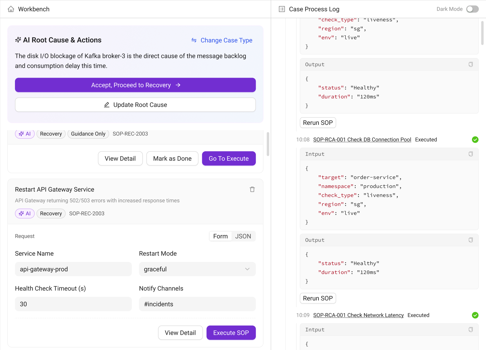

01 / AI 与时代
从 Figma 走到代码
开始时，TPM 和设计的主要工作仍在 Figma。我先尝试让 Codex 通过 MCP 操作画布，再用自己整理的 Skill 约束生成，让它使用已有组件、遵守产品的布局和视觉规则。
标准界面的效果尚可，非标页面就差得多。更难接受的是耗时和成本：生成一份稿子要等很久，结果又需要继续修正。能做出来，不等于值得在日常工作里反复这样做。
我没有停在加长提示词上。我把基础规范、产品知识和当前项目的材料分开，增加组件检索，减少重复查找，也把流程改成先看结构方向，再补细节。方向还没定，就急着绑定所有 Token、补齐状态，只会让之后的推翻更贵。
另一条路是把设计要求写成 Design MD，交给 Figma Make。早在 2025 年末制作 Ask 时，我就已经用过 Make 生成能运行、能交互的方案，今年又尝试用更明确的规范约束它。当时生成的代码不能直接接入团队的生产工程，后续仍要整理设计文件和业务组件，让团队能够继续修改与协作。
再后来，我尝试让 Codex 直接在 React 工程中，按现有组件和代码要求生成界面。这条路在工程衔接上相对稳当，也让一个更难的问题浮现出来：当页面已经能运行、组件也用对了，我们依据什么认定设计已经完成？
02 / AI 与时代
规范能写进去多少
为了避免 AI 把所有页面都做成同一种后台，我整理的内容逐渐超出了视觉规范。产品里有哪些对象，哪些状态不能混淆，什么页面适合用表格，什么时候需要保留不同结构，都得交代。
后来看到外部团队公开的 Design Skill 实践，我发现其中一些方法与自己探索的方向相近：把专业经验整理成 AI 能读取的知识，再用规则和资产约束执行。原来大家都在尝试解决相似的问题。
但规则写得更完整，也没有让我放心交出全部判断。规范能够保存已经形成的经验；遇到新的需求，还要判断原来的经验是否适用，有没有遗漏更重要的问题。执行得越像一份完整方案，这些遗漏反而越容易被忽略。
例如，在 Ask 的审批场景里，按钮和弹窗都可能符合规范，用户却未必看得清自己批准了什么。接受诊断原因，和同意执行恢复操作，是两个不同的决定。把它们合成一个“确认”，界面会更简洁，人的选择却变少了。这类取舍需要结合任务来判断，无法仅靠控件是否合规来验收。
Ask · 高保真设计方案局部

03 / AI 与时代
被省下的工作去了哪里
我理解大家希望缩短流程。产品和研发能直接生成界面，很多事情就不必再等设计排期。作为使用者，我自己也享受这种变化带来的自由。
我的担心在于，有些被跳过的思考，会变成之后的设计债。用户需要额外辨认操作范围，遇到异常只能重新开始，或者反复找人解释一个原本可以讲清楚的状态。上线时不一定马上出问题，代价可能在之后的使用和维护中慢慢出现。
这件事和岗位名称没有必然关系。产品、研发同样可以作出好的设计判断，设计师也会遗漏问题。只要流程发生了变化，就需要重新确认：谁来理解用户任务，谁来比较取舍，谁来检查那些没有顺利走通的情况。
我愿意继续把经验写进 Skill，也愿意接受更多工作被 AI 接过去。在这些尝试里，我还没有找到一种办法，仅靠补全规范，就能放心把上述问题一并交出去。AI 可以参与分析和检查，具体方案仍需要放到真实任务中检验。
这套方法是否值得继续，要把生成、纠正和维护的成本放在一起看，也要看使用者的任务有没有变得更容易完成。下一轮尝试，我想沿着这些具体问题继续验证。